11 | ZGC Experimental |
12 | Shenandoah Experimental |
13 | ZGC Uncommit Memory |
14 | & ZGC Support |
Nicht alltäglich
Neues bei Tools, GCs, Vector und FFM API in Java 21 LTS
Benjamin Schmid, ben@tolor.de @ben@tolor.de
Mehr Speed bei weniger RAM
5.388 weniger Bugs, dafür 3.539 neue Enhancements
Einfacher und schneller an den Start
Agenda
Innovationen bei den Garbage Collectors
Einblick in das Foreign Function & Memory API
Wofür ist das Vector API gut?
Vermischtes aus dem Bereich Tools
Vermischtes: Von alten Zöpfen & neuen Kleinigkeiten
Ausblick
Garbage Collectoren
GC Evolution Timeline
15 | Shenandoah & |
16 | ZGC Improvements |
17 | Java 17 LTS |
18 | ZGC String depduplication |
21 | [ Generational ZGC |
Die neue Generation der Low-Latency GCs
Moderne Architekturen: Multi-Core & TB RAM
kurze GC Pausen im einstelligen Millisekunden-Bereich
→ erkauft Responsiveness gegen Durchsatz(fast) vollständig parallel & nebenläufig
Pausen unabhängig von Größe des HeapsUnterstützen Class Unloading & Uncommit Memory
Einfach zu konfigurieren & Auto-tuning
Z Garbage Collector (ZGC)
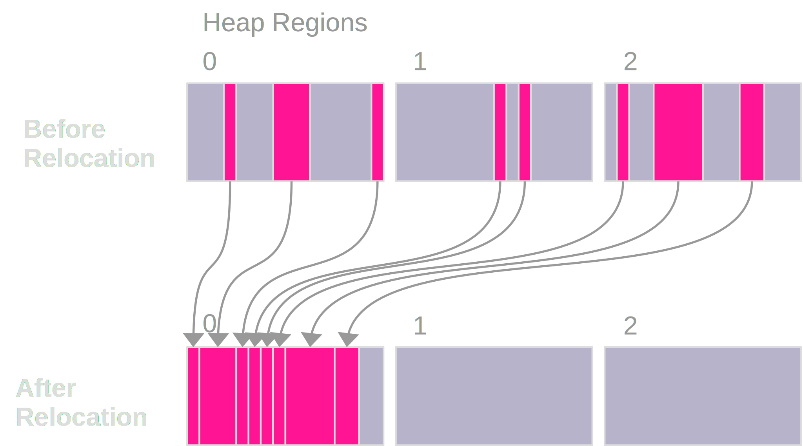
-XX:+UseZGC
„A scalable low-latency garbage collector“
Ziele
GC Pausen kleiner 10ms 1ms
Durchsatzeinbuße max. -15% gegenüber G1
Heapgrößen 8MB – 16TB
Einfaches bzw. Automatisches Tuning
Colored Pointers & Load/Write Barriers
→ Object Relocation
Shennadoah GC
„A low-pause-time garbage collector by concurrent evacuation work“
ZGC sehr ähnlich Brooks (Forward) Pointers
Bietet verschieden Modi & Heuristic-Profile: adaptive, static, compact, aggressive
Latenz gering abhängig von Root- & Live-Set
Schwächelt bei zahlreichen Weak References
Red Hat Kind → andere Service Offerings
Backports für JDK 8 & 11; auch 32-bit
-XX:+UseShenandoahGC
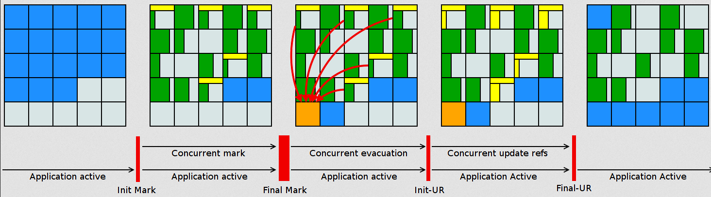
End-Gegner aller GCs: „Allocation Stall“
Objekte entstehen schneller, wie der GC Speicher wieder frei räumen kann:
Große Objektgraphen und/oder
Hohe Allokationsraten
Workarounds
Mehr RAM: Heap-Size erhöhen
Mehr CPU: Durch mehr GC threads
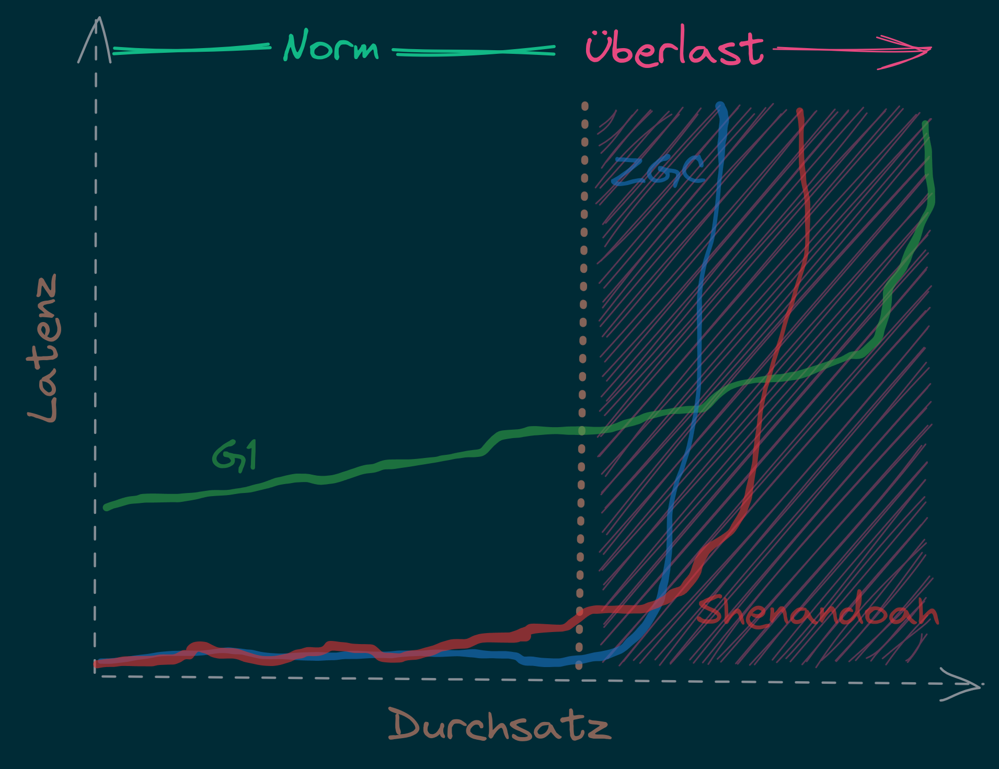
Generational GC’ing
Arbeits-Hypothese:
Most Java objects are short-lived.
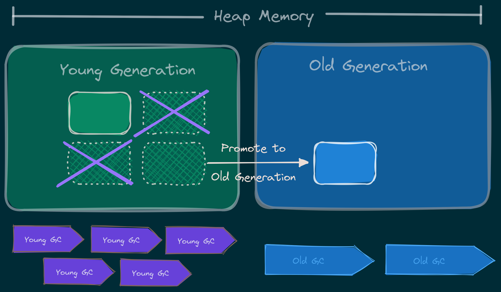
Generational GC’s Status
| Young Gen | Old Gen | Garbage Collector |
|---|---|---|
G1 | ||
ZGC | ||
Shenandoah | ||
Serial GC | ||
Parallel GC | ||
CMS | ||
Epsilon GC | ||
Generational Ansatz nicht neu: GC früher separat für Young Gen & Old Gen getrennt!
Neue GCs managen den Heap alleine & vollständig.
ZGC: Colors & Barriers
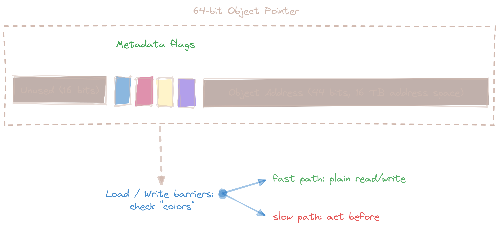
ZGC: Multi-Mapped Address
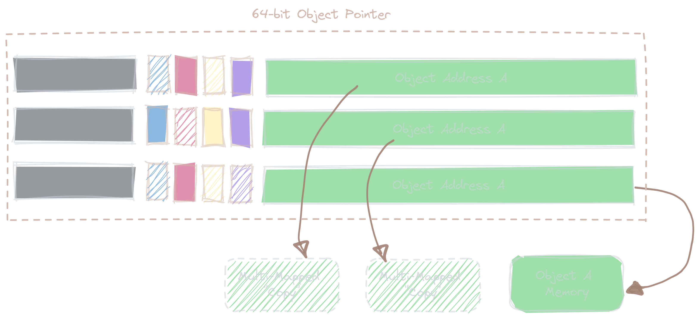
Generational ZGC: Going "Colorless" JEP 439
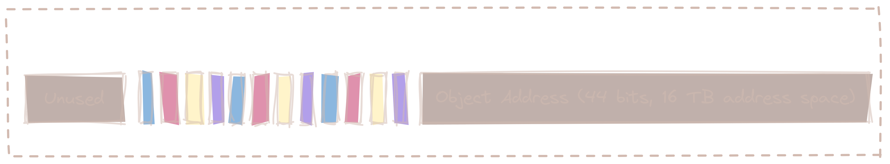
Problem: Multi-mapped memory going beserk with generational ZGC!
Generational ZGC: Going "Colorless" JEP 439
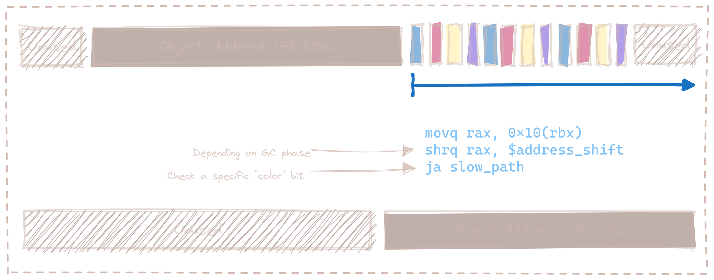
Lösung: Aktualisiertes Layout & Bitshift erlaubt Color-check & -elimination.
(Stark vereinfachte Darstellung)
ZGC: Automatic Tunings
Dynamic Generation Sizing
Freier Speicher ist nicht in Generationen aufgeteilt
Zusätzlich: In-place compaction capabilities
Somit: Nie evacuation failure (und: Kein-Xmnnötig)
Dynamic Tenuring Threshold
Kein
-XX:TenuringThresholdnötig:
Automatisch getuned.
Initiating Heap Occupancy
Kein
-XX:InitiatingHeapOccupancyPercent:
Automatisch getuned.
Dynamic number of threads
Kein
-XX:ConcGCThreadsnötig:
Boosted automatisch bei Allocation Spikes.
Things you SHOULD tune
Just set the max heap size:
-Xmx
java -XX:+UseZGC -XX:+ZGenerational -Xmx …Generational ZGC: Performance
Cassandra 4 Performancetests (128GB)
4x GC Throughput
25% des ursprünglichen Memory
weiter: unter <1ms Latenz!
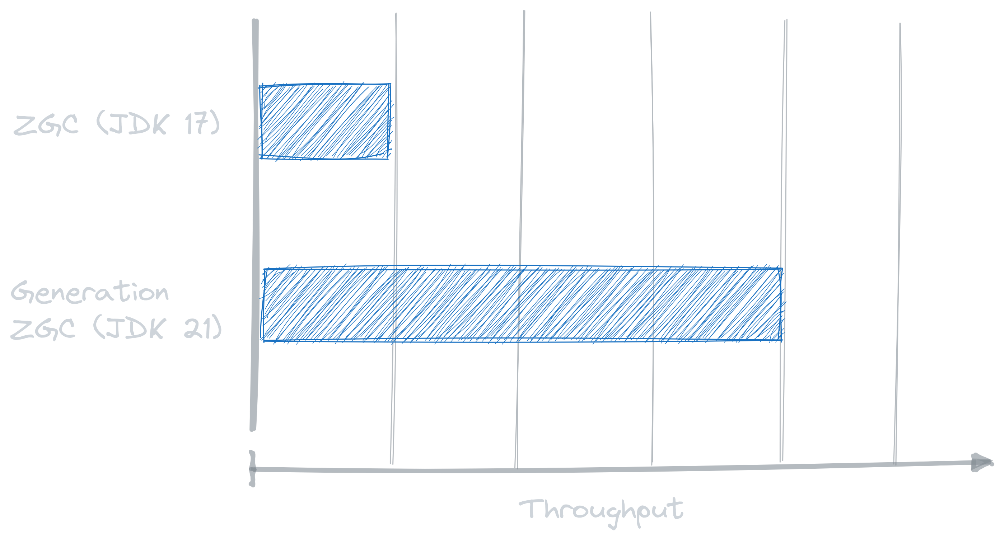
Stilberatung: Welcher GC ist der Richtige für mich?
| GC | Optimiert für… | Kommentar |
|---|---|---|
G1 | Balance | Zielt auf Balance von Durchsatz & Latenz. |
ZGC | Latenz | Low-latency Champion: Pausen unabhängig Live- und Root-Set. |
Shenandoah | Latenz | Auch verfügbar für JDK8, JDK11 und 32-bit. Red Hat. Generational in Arbeit. |
ParallelGC | Durchsatz | Wenn höchster Durchsatz gefragt ist. Parallel & mehrere Threads: |
SerialGC | Speicherbedarf | Single-Threaded. Empfiehlt sich nur für Heaps bis ~100MB. |
Zing/Azul | Pauseless | Nicht im OpenJDK; nur kommerziell verfügbar |
Änderungen bei GC’s im Überblick
ZGC
Generational ZGC
ZGC Supports String Deduplication
Fixed Long Process Non-Strong References Times
Multiple
Configurable Card Table Card Size
Removal of Diagnostic Flag GCParallelVerificationEnabled
Add missing gc+phases logging for ObjectCount(AfterGC) JFR event collection code
Legacy
SerialGC String Deduplication
ParallelGC String Deduplication
G1
Allow G1 Heap Regions up to 512MB
Obsoleted Product Options -XX:G1RSetRegionEntries and -XX:G1RSetSparseRegionEntries
G1 remembered set memory footprint regression
Add GarbageCollectorMXBean for Remark and Cleanup Pause Time
Improved Control of G1 Concurrent Refinement Threads
Disable Preventive GCs by Default
Last Resort G1 Full GC Moves Humongous Objects
Many, many, more…
TL;DR: Tipps für den GC
Upgrade lohnt sich!
Latenz wichtig? → ZGC
„Probieren geht über Studieren!“
Mut zum Loslassen: GC-Parameter
Exkurs: Preview features Preview JEP 12
… sind neue Sprach–, JVM– oder API-Features, die bereits vollständig spezifiziert und implementiert sind, aber durch Community Feedback aus dem „echten Leben“ zusätzlich validiert werden sollen.
_z.B.: Pattern Matching, Switch Expression, Text Blocks, Records, Sealed Classes
Unlock Compilation
$ javac --enable-preview …Unlock Execution
$ java --enable-preview …
Keine Cross-compilation mittels --release xx möglich!
Foreign Function & Memory API Preview
FFM: History
| JEP | JDK | Status | Titel |
|---|---|---|---|
14 | Incubator | Foreign-Memory Access API | |
15 | 2. Incubator | Foreign-Memory Access API | |
16 | 3. Incubator | Foreign-Memory Access API | |
16 | Incubator | Foreign Linker API | |
17 | Incubator | Foreign Function & Memory API | |
18 | 2. Incubator | Foreign Function & Memory API | |
19 | Preview | Foreign Function & Memory API | |
20 | 2. Preview | Foreign Function & Memory API | |
21 | 3. Preview | Foreign Function & Memory API | |
Retro: Java Native Interface (JNI)
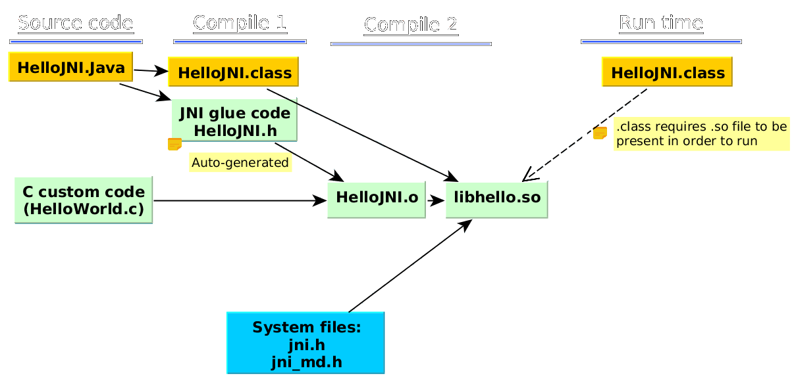
26 Jahre alt
erfordert
.c&.h-Filesmehrstufiger Prozess:
kleinteilig & brüchig
↓
sehr verworren
Motivation Project Panama Preview JEP 442
Starke Drittbibliotheken (z.B. ML, GPU, …) mit dynamischer Entwicklung
Tensorflow, CUDA, OpenGL, OpenSSL, fuse, libsodium, …
Introduce an API by which Java programs can interoperate with code and data outside of the Java runtime […] without the brittleness and danger of JNI.
Ziele: Einfachheit – Performance – Allgemeingültigkeit – Sicherheit
Einfacher Funktionsaufruf
import java.lang.foreign.*;
class CallPid {
public static void main(String... p) throws Throwable {
var lookup = Linker.nativeLinker().defaultLookup(); (1)
var libSymbol = lookup.find("getpid").orElseThrow(); (2)
var nativeSig = FunctionDescriptor.of(ValueLayout.JAVA_LONG); (3)
Linker cABI = Linker.nativeLinker();
var getpid = cABI.downcallHandle(libSymbol, nativeSig); (4)
System.out.println((long) getpid.invokeExact()); (5)
}
}| 1 | Lookup für Standard-Symbole |
| 2 | adressiertes Symbol – hier via Lookup in den System Libraries |
| 3 | gewünschte Java-Signatur des Java Foreign Handles |
| 4 | Funktionshandle beziehen |
| 5 | Native Funktion aufrufen |
… das Gleiche zu Zeiten von JDK 17
import java.lang.invoke.*;
import jdk.incubator.foreign.*;
class CallPid {
public static void main(String... p) throws Throwable {
var libSymbol = CLinker.systemLookup().lookup("getpid").orElseThrow();
var javaSig = MethodType.methodType(long.class); (1)
var nativeSig = FunctionDescriptor.of(CLinker.C_LONG);
CLinker cABI = CLinker.getInstance();
var getpid = cABI.downcallHandle(libSymbol, javaSig, nativeSig); (2)
System.out.println((long) getpid.invokeExact());
}
}| 1 | Zusätzlich: Definition gewünschter Java-Signatur des Java Foreign Handles |
| 2 | …und Verwendung dergleichen |
Komplexeres Beispiel mit Off-Heap Memory
int radixsort(const unsigned char **base, int nmemb,
const unsigned char *table, unsigned endbyte);…sortiert nmemb Strings die jeweils mit endbyte terminiert sind: Der erste String bei base
↓
var linker = Linker.nativeLinker();
var stdlib = linker.defaultLookup();
var funcDesc = FunctionDescriptor.ofVoid(
ADDRESS, JAVA_INT,
ADDRESS, JAVA_CHAR);
MethodHandle radixsort = linker.downcallHandle(
stdlib.find("radixsort").orElseThrow(), (1)
funcDesc);| 1 | Handle für die native C-Funktion beziehen |
…was möchten wir erreichen?…
String[] javaStrings = {"mouse", "cat", "dog", "car"};
String[] sorted = {"car", "cat", "dog", "mouse"};
int strCount = javaStrings.length;
{
// 1. Übergabe der Java Strings Tabelle in nativen Speicher
// 2. Sortieren dergleichen mittels `radixsort` C-Funktion
// 3. Ergebnis auf den Java-Heap
}
assert Arrays.equals(javaStrings, sorted);…das ganze live und in Farbe!
try (Arena offHeap = Arena.ofConfined()) { (1)
MemorySegment pointers = offHeap.allocateArray(ADDRESS, strCount); (2)
for (int i = 0; i < strCount; i++) { (3)
MemorySegment cString = offHeap.allocateUtf8String(javaStrings[i]);
pointers.setAtIndex(ADDRESS, i, cString);
}
radixsort.invoke(pointers, strCount, MemorySegment.NULL, '\0'); (4)
for (int i = 0; i < strCount; i++) {
MemorySegment cString = pointers.getAtIndex(ADDRESS, i);
cString = cString.reinterpret(Long.MAX_VALUE); (5)
javaStrings[i] = cString.getUtf8String(0);
}
}| 1 | try-with-Arena steuert allen Off-Heap Speicher und gibt diesen später wieder frei. |
| 2 | Off-heap MemoryPointer-Tabelle reservieren |
| 3 | Java Strings in den Off-Heap kopieren und ihre Pointers in Tabelle einsetzen |
| 4 | Aufruf der radixsort C-Funktion zum sortieren der Pointer |
| 5 | Aktualisiere Größe des erhaltenen MemorySegment von 0 auf Long.MAX_VALUE |
Helferlein jextract
Generiert aus direkt aus .h-Dateien passende API Wrapper
als .class oder .java mit den notwendigen Foreign API-Aufrufen.
Nicht direkt in JDK 21 enthalten, sondern via Panama EAP Builds (s.u.).
$ jextract -t de.bentolor /usr/include/unistd.himport de.bentolor.unistd_h;
class CallPid {
public static void main(String[] args) {
System.out.println( unistd_h.getpid() );
}
}Exkurs: Incubator Modules Incubator JEP 11
sind experimentelle APIs und Tools (nicht: JVM/Sprache),
welche für Experimente und Feedback bereitgestellt werden.
javac --add-modules jdk.incubator.foo …
java --add-modules jdk.incubator.foo …z.B.: ex: HTTP/2 Client, Packaging Tool, Scoped Values, … aktuell: Vector API
Dabei gilt: „Alles im Fluß!“
Vector API Incubator
Das Vektor-API Incubator JEP 448
Introduce an API to express vector computations that reliably compile at runtime to optimal vector instructions on supported CPU architectures, thus achieving performance superior to equivalent scalar computations.
↓
???
Vektor-was? → Vektor-Rechnung!
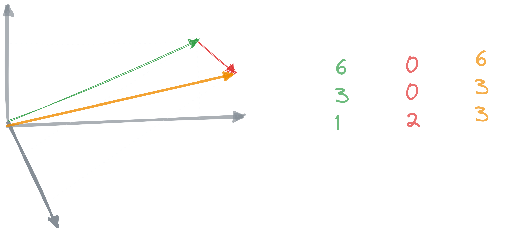
Das Vektor API im Portrait
Motivation
SIMD (Single Instruction Multiple Data)-Features aktueller CPUs (SSE, AVX, 3DNow, AArch64: Neon).
→ Performance & (Energie-) Effizienz
Anwendungsfälle
Bild-, Signal- und Textverarbeitung
Machine Learning
Verschlüsselung
Banales: Array-Vergleich, Zeichensatz- konvertierungen, …
Ziele
Klare & prägnante API
Plattform-agnostisch
Zuverlässig auf x64 und AArch64
„Graceful degradation“
Abgestimmt mit Valhalla
(value-based classes)
Vector API: History
Vector API: Begriffe
- Type (Elemente)
Byte,Short,Integer,Longund
Float&Doublesowie ihre Primitiven- Shape
unterstütze Vektorgrößen von
64,128,256und512Bits sowiemaxBits.- Species
Shape & Type → Elemente pro Vektor
- Operations
lane-wise oder
cross-lane (Sortieren, Betrag, Sum, Avg, …)
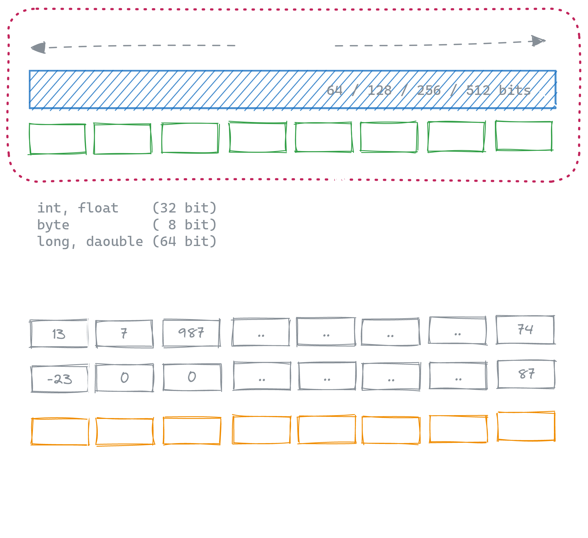
Vektoren addieren… „Klassisch“
int[] a1 = {2, 49, -12, 3, 11, 32, 11, 455, 0, 283};
int[] a2 = {0, -3, 185, 221, 76, 2, -2, 0, 0, 0};
int[] aResult = new int[a1.length];
for (int i = 0; i < a1.length; i++) {
aResult[i] = a1[i] + a2[i];
}
System.out.println(aResult[1] == 46 ? "Yep!" : "Duh!");Yep!
Mittels Vector API
int[] vResult = new int[a1.length];
var species = IntVector.SPECIES_256;
var v1 = IntVector.fromArray(species, a1, 0);
var v2 = IntVector.fromArray(species, a2, 0);
var result = v1.add(v2);
result.intoArray(vResult, 0);
System.out.println(Arrays.equals(aResult, vResult) ? "Yep!" : "Duh!");Duh!
… definiert die „Species“ die Anzahl der Elemente!
int[] a1 = {2, 49, -12, 3, 11, 32, 11, 455, /* | */ 0, 283};
int[] a2 = {0, -3, 185, 221, 76, 2, -2, 0, /* | */ 0, 0};
int[] vResult = new int[a1.length];
var species = IntVector.SPECIES_256;
var v1 = IntVector.fromArray(species, a1, 0);
var v2 = IntVector.fromArray(species, a2, 0);
var result = v1.add(v2);
result.intoArray(vResult, 0);
System.out.println(Arrays.equals(aResult, vResult) ? "Yep!" : "Duh!");Duh!
…darum „Slicing“ erforderlich …
int[] a1 = {2, 49, -12, 3, 11, 32, 11, 455, /* | */ 0, 283};
int[] a2 = {0, -3, 185, 221, 76, 2, -2, 0, /* | */ 0, 0};
int[] vResult = new int[a1.length];
var species = IntVector.SPECIES_256;
for (int i = 0; i < a1.length; i += species.length()) {
var v1 = IntVector.fromArray(species, a1, i);
var v2 = IntVector.fromArray(species, a2, i);
var result = v1.add(v2);
result.intoArray(vResult, i);
}
System.out.println(Arrays.equals(aResult, vResult) ? "Yep!" : "Duh!");…aber auch „Masking“…
int[] a1 = {2, 49, -12, 3, 11, 32, 11, 455, /* | */ 0, 283};
int[] a2 = {0, -3, 185, 221, 76, 2, -2, 0, /* | */ 0, 0};
int[] vResult = new int[a1.length];
var species = IntVector.SPECIES_256;
for (int i = 0; i < a1.length; i += species.length()) {
var mask = species.indexInRange(i, a1.length);
var v1 = IntVector.fromArray(species, a1, i, mask);
var v2 = IntVector.fromArray(species, a2, i, mask);
var result = v1.add(v2, mask);
result.intoArray(vResult, i, mask);
}
System.out.println(Arrays.equals(aResult, vResult) ? "Yep!" : "Duh!");… um den „Verschnitt“ zu managen!
int[] a1 = {2, 49, -12, 3, 11, 32, 11, 455, /* | */ 0, 283};
int[] a2 = {0, -3, 185, 221, 76, 2, -2, 0, /* | */ 0, 0};
int[] vResult = new int[a1.length];
var species = IntVector.SPECIES_256;
for (int i = 0; i < a1.length; i += species.length()) {
var mask = species.indexInRange(i, a1.length);
var v1 = IntVector.fromArray(species, a1, i, mask);
var v2 = IntVector.fromArray(species, a2, i, mask);
var result = v1.add(v2, mask);
result.intoArray(vResult, i, mask);
}
System.out.println(Arrays.equals(aResult, vResult) ? "Yep!" : "Duh!");Yep!
„Species“ sind Plattform-spezifisch!
int[] a1 = {2, 49, -12, 3, 11, 32, 11, 455, /* | */ 0, 283};
int[] a2 = {0, -3, 185, 221, 76, 2, -2, 0, /* | */ 0, 0};
int[] vResult = new int[a1.length];
var species = IntVector.SPECIES_PREFERRED;
for (int i = 0; i < a1.length; i += species.length()) {
var mask = species.indexInRange(i, a1.length);
var v1 = IntVector.fromArray(species, a1, i, mask);
var v2 = IntVector.fromArray(species, a2, i, mask);
var result = v1.add(v2, mask);
result.intoArray(vResult, i, mask);
}
System.out.println(Arrays.equals(aResult, vResult) ? "Yep!" : "Duh!");Pitfall: Das Masking wird nicht von allen CPUs unterstüzt!
Cross-Lane Beispiel
|v⃗|= sqrt ( v12 + v22 + v32 + … )
int[] a1 = {2, 49, -12, 3, 11, 32, 11, 455, 0, 283};
var species = IntVector.SPECIES_PREFERRED;
double sqrSums = 0d;
for (int i = 0; i < a1.length; i += species.length()) {
var mask = species.indexInRange(i, a1.length);
var v1 = IntVector.fromArray(species, a1, i, mask);
var v2 = v1.mul(v1, mask);
sqrSums += v2.reduceLanes(VectorOperators.ADD, mask);
}
double vBetrag = Math.sqrt(sqrSums);Auch das aufaddieren der Quadrate könnte man wunderbar per Vector-API abbilden!
Performance: „Your mileage may vary!“
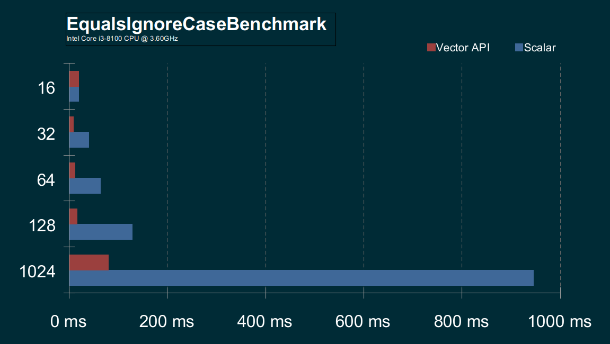
Starke Abhängigkeit der verfügbaren CPU-Features (z.B. Masking), verfügbaren Shapes und CPU Performance.
Vector API: Beispiele & Benchmarks
Tooling
Simple Web Server JEP 408
$ java -m jdk.httpserver -p 4444 -d /tmp -o verbose
Binding an Loopback als Standard. Verwenden Sie für alle Schnittstellen …
Bedient /tmp und Unterverzeichnisse auf 127.0.0.1 Port 4444
URL http://127.0.0.1:4444/Unterstützt nur HTTP/1.1, kein HTTPS und nur GET und HEAD.
Simple Web Server JEP 408
$ jwebserver -p 4444 -d /tmp -o verbose
Binding an Loopback als Standard. Verwenden Sie für alle Schnittstellen …
Bedient /tmp und Unterverzeichnisse auf 127.0.0.1 Port 4444
URL http://127.0.0.1:4444/Als Convenience bietet das JDK das Wrapper-Script jwebserver an
Simple Web Server JEP 408
public static void main(String[] args) {
HttpServer server = SimpleFileServer.createFileServer(
new InetSocketAddress(4444),
Path.of("/tmp"),
SimpleFileServer.OutputLevel.VERBOSE);
server.start();
}…auch programmatische Verwendung möglich.
javadoc Code Snippets JEP 413
Neues
{@snippet : … } tagInhalte inline oder über externe Dateien
Unterstützt verschiedene Snippet-Sprachen
/**
* Der Evergreen im Portrait.
* {@snippet :
* // @highlight region substring="Hello"
* class HelloWorld {
* public static void main(String... args) {
* // @link regex="Sy.+m" target="java.lang.System" :
* System.out.println("Hello World!");
* }
* // @end
* }
* }
*/Unterstützte Markup Tags:
@start&@endRegions für referenzierbare Ausschnitte@highlight-ing anhand RegEx, Regions oder Text@replacefür Textersetzungen@linkermöglicht Verlinkungen
Markup-Tags haben die Form @name gefolgt von Argumenten der Form param="wert" und sind als Kommentare in der Sprache des Snippets verfasst. Mit : wirken sie auf die Folgezeile.
Javadoc Code Snippets: Tags & Argumente
| Tag | Arguments |
|---|---|
|
|
|
|
|
|
|
|
|
|
|
|
Mehr Javadoc Verbesserungen
Custom Javascript integrieren via
--add-script interact.jsNeue
--link-modularity-mismatchwarningLayoutverbesserung für Handys
Preview API Seite erlaubt toggling
New gibt Überblick
Details & Maintenance
Es ist nicht einfach, ein Java-Anfänger zu sein…
Es ist nicht einfach, ein Java-Anfänger zu sein…
public class ClassicHello {
String greeting() { return "Hello, World!"; }
public static void main(String[] args) {
System.out.println(new ClassicHello().greeting());
}
}…aber bald wird es einfacher sein!
String greeting() { return "Hello, World!"; }
void main() {
System.out.println(greeting());
}Unnamed Classes and Instance Main Methods JEP 445 Preview
String greeting() { return "Hello, World!"; }
void main() {
System.out.println(greeting());
}$ javac --enable-preview --release 21 Hello.java
$ java --enable-preview Hello
main()-Methoden
auf Instanzenunnamed classes
UTF-8 als Standardkodierung der Java API JEP 400
Der default charset kommt in der Java API z.B. bei FileReader/Writer, InputStreamReader, Formatter Scanner, u.a. zum Einsatz.
Je nach Betriebssystem, Region- und Spracheinstellung:
java.io.FileReader(“hello.txt”) // -> "こんにちは" (macOS)
java.io.FileReader(“hello.txt”) // -> "ã?“ã‚“ã?«ã?¡ã? " (Windows (en-US))
java.io.FileReader(“hello.txt”) // -> "縺ォ縺。縺ッ" (Windows (ja-JP)Verschärfend: Neuere Java APIs wie Files.write/readString(), und Files.newBufferedReader/Writer() verwendeten dagegen bereits stets UTF-8!
UTF-8 als Standardkodierung der Java API JEP 400
Der default charset kommt in der Java API z.B. bei FileReader/Writer, InputStreamReader, Formatter Scanner, u.a. zum Einsatz.
Seit JDK18 wird nun immer UTF-8
als Standardkodierung verwendet!
„Jahresinspektion“
JEP 449 Der Windows 32-bit x86 Port ist „for Removal“ deprecated.
JEP 418 führt ein Service-Provider Interface (SPI) für die Internet-Address Resolution ein.
Das unterstützt Project Loom, neue Protokolle oder Testing.JEP 451 Dynamisches Laden of Agenten führt nun zu einer Warnung (z.B. Mockito).
Spätere JVMs werden es vorraussichtlich per Default verbieten.JEP 452 Die Key Encapsulation Mechanism (KEM) API sichert symmetrische Schlüssel ab.
JEP 416 implementiert die Core Reflection with Method Handles neu.
Mit JEP 416 wurde Finalization als deprecated markiert.
JEP 422 bringt einen neuen Linux/RISC-V Port
Der Aufruf
new URL("https://bentolor.de")ist nun ebenfalls deprecatedDie Umwandlung zwischen Primitives (z.B.
long→int) wurde beschleunigt:
Für Java Serializierung bringt das bis zu +5% Performancegewinn.
GraalVM
GraalVM — Polyglot VM
Ahead-of Time compiler (AoT)
Polyglotte VM für div. Sprachen
→ JVM (Java, Kotlin, Scala, …)
→ LLVM (C, C++) → native
→ Java Script, Python, Ruby, R
Sprachen sharen Runtime
→ Zero Interop OverheadNative executables (SubstrateVM)
→ Kleiner Startup & MemoryGraalVM Community & Enterprise
Microservice Frameworks
Helidon, Quarkus.io, Micronaut, Spring Fu, Ktor, …
→ zielen auf GraalVM AoT & Microservices, z.B. via IoC zur Compiletime
Vielen Dank!
Artikel
Videos
Empfehlenswert: Offizieller „Java“-Kanale

Interaktive HTML5 Slides
mit allen Links & Demovideos
Proudly made with and: asciidoctor-revealjs,
pexels.com & freeimages.com